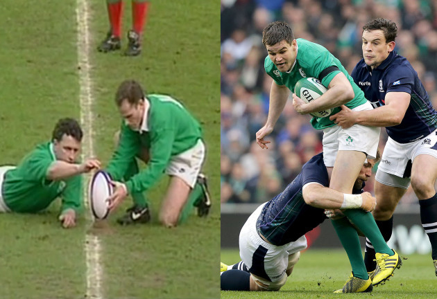
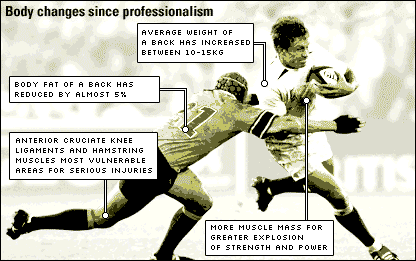

Rugby

Rugby union, commonly known in most of the world simply as rugby, is a contact team sport which originated in England in the first half of the 19th century. One of the two codes of rugby football, it is based on running with the ball in hand.
What is Rugby Union?
- History of Rugby- Rugby The origin of rugby football is reputed to be an incident during a game of English school football at Rugby School in 1823, when William Webb Ellis is said to have picked up the ball and run with it.[7] Although the evidence for the story is doubtful, it was immortalised at the school with a plaque unveiled in 1895.[8][9] Despite the doubtful evidence, the Rugby World Cup trophy is named after Webb Ellis. Rugby football stems from the form of game played at Rugby School, which former pupils then introduced to their university.
- Professionalism of Rugby-The development of rugby union into what it is today was only made possible by the IRB’s decision in 1995 to declare rugby union an open game, by which it meant that restrictions on payments or benefits to those connected with the game would be removed entirely, ushering in the era of professionalism.
